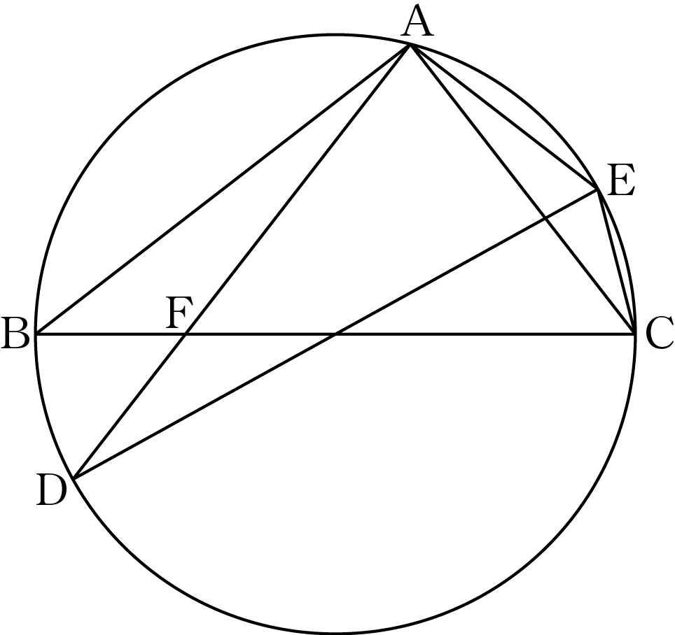

그림과 같이 선분 를 지름으로 하는 원에 두 삼각형 와 가 모두 내접한다. 두 선분 와 가 점 에서 만나고
, ,
이다. 일 때, 의 값을 구하시오. [4점]

판단삼각형 도 같은 원에 내접하니까 사인법칙을 쓰면 도 지름이라는 게 나와. 두 지름이 중심 에서 만나는 게 이 문제의 열쇠야.
지름에 대한 원주각이 직각이고, 거꾸로 원주각이 직각이면 그 현이 지름이야.
두 변의 길이와 그 끼인각이 같으니까 두 삼각형이 합동이 되는 거야.
가 선분 위에 있으니까 와 는 같은 각이야. 삼각형 에 사인법칙을 쓰면 이 각의 사인값이 나와.
가 선분 위에 있으니까 는 직각인 의 일부야.
이니까 코사인값은 양수 쪽을 골라.
가 선분 위에 있어서 직각 가 와 로 나뉘는 거야.
두 삼각형은 밑변이 같은 직선 위에 있고 꼭짓점이 같은 라서 넓이의 비가 밑변의 비가 되는 거야.
판단넓이를 로 두 번 쓰면 는 약분되고 와 의 비만 남아.
직각삼각형이니까 피타고라스 정리로 두 변의 길이가 정해져.
판단삼각형 에서 코사인법칙을 쓰면 양수인 해가 두 개 나와서 하나를 더 걸러야 해. 삼각형 쪽을 쓰면 양수인 해가 하나뿐이라 바로 정해져.
주의는 선분의 길이라서 음수인 해는 버려야 해.
구한 길이로 삼각형 에 코사인법칙을 쓰면 가 원래대로 1이 나오는지 확인할 수 있어. 묻는 건 이니까 마지막에 제곱해서 답해.